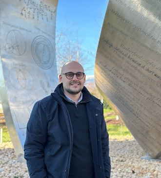

Climate Econometrics
Empirical analysis of climate-related risks and their economic implications using econometric methods.
Panteion University of Social and Political Sciences · Department of Economics and Regional Development

I am a researcher at the Macroeconomic Policy and Forecasting Lab at Panteion University of Social and Political Sciences, where my research focuses on macroeconomic forecasting, financial cycles, and policy analysis.
I am a Ph.D. Candidate at Panteion University of Social and Political Sciences, working on econometrics and environmental economics, with a particular interest in climate risk, macroeconomic modeling, forecasting, and quantitative analysis.
Quantitative methods for understanding economic and environmental dynamics.
Empirical analysis of climate-related risks and their economic implications using econometric methods.
Quantitative analysis of the relationship between economic activity and environmental impacts.
Forecasting and empirical modeling of macroeconomic dynamics and policy-relevant applications.
Research on climate risk, macroeconomic conditions, and the global financial cycle.
Doctoral research focused on climate risk through macroeconomic modeling and empirical analysis.
Climate Risk · Macroeconomics · EconometricsMaster’s thesis examining climate risk and the global financial cycle through forecasting experiments.
Forecasting · Financial Cycle · Climate RiskResearch on challenges, opportunities, and future prospects of AI in accounting.
Research Grant · Economic Chamber of GreeceResearch on challenges, opportunities, and future prospects of AI in banking.
Research Grant · Hellenic Federation of Bank Employee UnionsA personal space for my views on economics, technology, AI, climate risk and current developments.
A personal perspective on the economic consequences of climate change and the role of quantitative analysis.
Read more ↗Thoughts on AI, productivity, employment, financial institutions and economic transformation.
Read more ↗Short reflections on forecasting, econometric modeling and decisions under uncertainty.
Read more ↗Copy an opinion card in index.html and replace its title, text and link. Later, each opinion can have its own HTML page.
Undergraduate Program, Department of Economics and Regional Development, Panteion University. Teaching problem-solving sessions as part of PhD teaching obligations.
Undergraduate Program, Department of Economics and Regional Development, Panteion University. Teaching problem-solving sessions as part of PhD teaching obligations.
Secondary education level, including private tutoring centers and one-to-one tutoring.
Panteion University of Social and Political Sciences · Department of Economics and Regional Development · Athens, Greece
Thesis: Climate Risk through Macroeconomic Modeling: An Empirical Analysis of Economic Impacts and Policy Responses.
Supervisor: Stavros Degiannakis
Panteion University of Social and Political Sciences · Department of Economics and Regional Development · Athens, Greece
Thesis: Climate Risk and Global Financial Cycle: Some Forecasting Experiments.
Supervisor: Stavros Degiannakis
Panteion University of Social and Political Sciences · Department of Public Administration · Athens, Greece
My primary focus is academic research and teaching. Alongside this work, I have professional experience in the private and public sectors.
AML · RRF · Statutory Audit · Tax Audit · Consulting
Department of Economic Affairs
Research activity at the Macroeconomic Policy and Forecasting Lab, Panteion University, focused on macroeconomic forecasting, financial cycles, and policy analysis.
Education, research experience, funded projects, teaching, and professional experience.
For academic collaboration, research discussion, or professional inquiries:
adribreggu@gmail.com